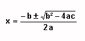
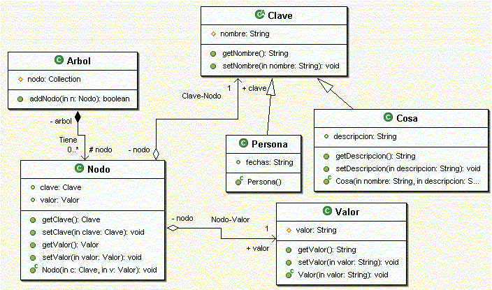

Ejercicios de Lenguaje Java y Entorno de Desarrollo
Proyecto básico en Eclipse
Crear un proyecto en Eclipse de nombre jhd-sesion1. Introducir los siguientes elementos en dicho proyecto:
a) Establecer como directorio de fuentes un directorio src, y como directorio de destino un directorio bin.
b) Crear un paquete es.ua.jtech.jhd.sesion1.ejerc1.personas.
c) Introducir las clases Java que encontrarás en las plantillas de esta sesión en el proyecto. Cada clase deberá copiarse al paquete que corresponda.
d) Introducir en el proyecto la librería JAR que encontrarás en las plantillas de esta sesión. Hacer que esta librería forme parte del classpath del proyecto.
e) Añadidle una nueva clase llamada Prueba en el paquete es.ua.jtech.jhd.sesion1.ejerc1, que tenga el siguiente código (NO COPIEIS Y PEGUEIS EL CODIGO, TECLEADLO A MANO).
package es.ua.jtech.jhd.sesion1.ejerc1;
import es.ua.jtech.jhd.sesion1.ejerc1.animales.*;
import es.ua.jtech.jhd.sesion1.ejerc1.insectos.Mosca;
import es.ua.jtech.jhd.sesion1.ejerc1.plantas.*;
public class Prueba
{
public static void main(String[] args)
{
// Datos del insecto
Mosca m = new Mosca();
m.nombre();
int edad3 = m.edad() + 2;
System.out.println ("Edad Insecto: " + edad3);
// Datos del animal
Elefante e = new Elefante();
e.nombre();
int edad2 = e.edad() + 5;
System.out.println ("Edad Animal: " + edad2);
// Datos de la planta
Geranio g = new Geranio();
g.nombre();
int edad5 = g.edad();
System.out.println ("Edad Planta: " + edad5);
}
}
f) Ejecutad la nueva clase Prueba.
Cálculo del factorial
Añadid a la clase Factorial.java el código necesario para que calcule el factorial de un número. Intentad hacer tanto la versión recursiva como la iterativa:
- La versión recursiva (en el método factorialRec()) consiste en un método que se llama a sí mismo hasta completar el resultado:
factorialRec(n) = n · factorialRec(n - 1)
Cuando n sea 0 se devuelve 1 y se termina la recursividad.
- La versión iterativa (en el método factorialIter()) consiste en realizar un bucle que vaya acumulando el resultado.
Comprobad que los programas devuelven lo mismo, dejando en el main() el código necesario para ver el resultado de los factoriales de 30, 5, 1 y 0, por ejemplo.
Ecuación de segundo grado (*)
Añadid a la clase Ecuacion.java el código necesario (dentro del método solucion(...)) para que resuelva una ecuación de segundo grado ax² + bx + c = 0:

El método solucion(...) devuelve un array de dos doubles, que son las dos soluciones al sistema. Si no hubiese solución, se devolvería null.
public double[] solucion(...)
{
double []sol = new double[2];
... //Codigo para resolver el sistema
return sol;
}
Probad que el ejemplo funciona para cada uno de los casos:
- a = 4, b = 1, c = -6
- a = 4, b = 1, c = 6
- a = 0, b = 3, c = -1
- a = 2, b = 0, c = -1
- a = 2, b = 2, c = 0
Algunos no tienen soluciones reales, otros tienen coeficientes cero que pueden dar problemas al dividir, etc. Controlar o no cada uno de estos casos se deja como optativo.
Clases abstractas y herencia
Vamos a ver un ejemplo de clases abstractas y herencia. Se tiene una clase abstracta Persona, de la que hereda una clase Hombre para definir los métodos abstractos. Además, se tiene otra clase Anciano, que hereda de Hombre para modificar el valor de alguno de esos métodos. La clase principal del grupo es Ej4, que se encarga de ejecutarlo todo. Se pide:
a) Probar a ejecutar la clase Ej4 y comprobar el resultado producido.
b) Convertid el ejemplo para utilizar interfaces en lugar de clases abstractas. Es decir, haced que Persona sea una interfaz (para ello no deberá implementar ningún método, sino dejarlos definidos).
c) Indicad los cambios que sufren las clases Hombre y Anciano con eso. Probad el ejemplo con los cambios y comprobad que el resultado que devuelve es el mismo.
Esquema UML (*)
Escribir el esqueleto (nombre de la clase, campos y nombre de los métodos) que podría tener una aplicación Java con el siguiente esquema:

Definid un fichero con extensión .java para cada clase, y que se llame igual que la clase. Dentro colocáis el esqueleto de la misma. Crear todas estas clases en un paquete es.ua.jtech.jhd.sesion1.ejerc5.arbol, dentro del proyecto creado para los ejercicios de la sesión.
Centro cultural
Un centro cultural se dedica al préstamo de dos tipos de materiales de préstamo: discos y libros. Para los dos se guarda información general, como su código identificativo, el título y el autor. En el caso de los libros, almacenamos también su número de páginas, y para los discos el nombre de la discográfica.
Al centro cultural acuden una serie de clientes (de los que se guarda su DNI y nombre), que realizan una serie de peticiones de discos o libros (como mucho hasta 5 peticiones). Para cada petición se guarda la fecha de inicio y fin del préstamo.
Escribir el esqueleto de las clases que estimes apropiadas para el supuesto planteado anteriormente. Crear todas estas clases en un paquete es.ua.jtech.jhd.sesion1.ejerc6.prestamos, dentro del proyecto creado para los ejercicios de la sesión.
Agencia inmobiliaria (*)
Una agencia inmobiliaria dispone de una serie de pisos en oferta. Estos pisos pueden ser viviendas de protección oficial, o pisos libres. En cualquier caso, se guarda la dirección del piso, el número de metros cuadrados, una descripción sobre su contenido y estado, y el precio. En el caso de viviendas libres, también almacenamos el porcentaje de beneficio que se lleva la inmobiliaria, que se puede calcular en función del precio.
Los clientes que solicitan pisos a la inmobiliaria dejan su DNI y nombre, y por cada visita que soliciten, se almacena la fecha y hora de la visita, y la impresión del cliente sobre el piso.
Una vez se ha encontrado un piso adecuado, la propia inmobiliaria ofrece al cliente un préstamo hipotecario, en el que se indica la cantidad solicitada, si se dispone de aval o no (por defecto, no), el tipo de interés aplicado, y el período de tiempo por el que estará vigente la hipoteca, en años.
Escribir el esqueleto de las clases que estimes apropiadas para el supuesto planteado anteriormente. Crear todas estas clases en un paquete es.ua.jtech.jhd.sesion1.ejerc7.inmobiliaria, dentro del proyecto creado para los ejercicios de la sesión.